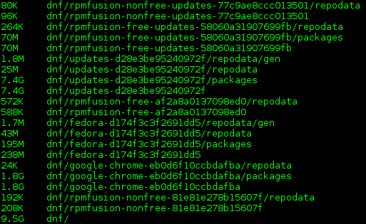
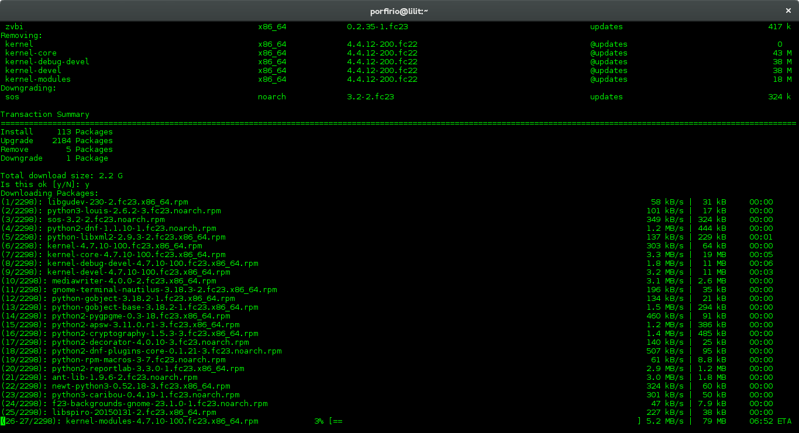

From May 26, 2015, to November 22, 2016, I enjoyed a smooth experience running Fedora 22 on my Lenovo ThinkPad T440p—a solid year and a half of tech bliss. However, on July 19, 2016, Fedora 22 officially entered its End of Life (EOL) phase. This meant no more security or maintenance updates, prompting the need to upgrade to a newer, stable version.
In this post, I'll walk you through the process of upgrading to Fedora 23 using the reliable DNF package manager. Let’s keep your Fedora system running fresh and secure! 🚀
Over the course of 18 months using Fedora 22, the package cache had accumulated approximately 10 GB of space on my hard drive.
To instruct DNF to retain downloaded packages in the cache, add the following line to the DNF configuration file located at /etc/dnf/dnf.conf:
su -c "echo 'keepcache = true' >> /etc/dnf/dnf.conf"
Upgrading to Fedora 23
Prerequisites for Upgrading
1. Ensure there is sufficient space on your / partition. This is necessary because the upgrade process involves downloading the latest version of every package installed on your system. To free up space, if needed, you can clear the stored package cache:
su -c 'dnf clean all'
2. Ensure your system is up-to-date by rebuilding the metadata cache and applying any pending updates:
su -c 'dnf makecache'
su -c 'dnf upgrade'
Install the DNF System Upgrade Plugin
DNF System Upgrade enables the upgrade to a newer Fedora version using a mechanism similar to offline updates. Packages are downloaded during regular system operation, and a reboot triggers their installation in a dedicated environment.
Install the required plugin with the following command:
su -c 'dnf install dnf-plugin-system-upgrade'
Download the Packages
Next, download the necessary packages for the upgrade to Fedora 23. This step ensures that every package currently installed on your system is replaced with its latest version for Fedora 23:
su -c 'dnf system-upgrade download --refresh --best --allowerasing --releasever=23'
The screenshot below shows the details of the packages to be downloaded and their total size:
You can also upgrade to newer versions such as Fedora 24, 25, or even Rawhide. However, I recommend avoiding skipping more than one release (a n + 2 jump). At the time of writing, the latest stable versions are Fedora 24 and 25, with Fedora 26 in the Branched state and Rawhide as the rolling development version.
To upgrade to another version, adjust the --releasever parameter:
- Upgrade to Fedora 24:
su -c 'dnf system-upgrade download --refresh --best --allowerasing --releasever=24'
- Upgrade to Fedora 25:
su -c 'dnf system-upgrade download --refresh --best --allowerasing --releasever=25'
- Upgrade to Rawhide:
su -c 'dnf system-upgrade download --refresh --best --allowerasing --releasever=rawhide'
Reboot to Apply the Upgrade
After downloading the packages, reboot your system to initiate the upgrade process:
su -c 'dnf system-upgrade reboot'
This command will restart the system. Upon reboot, the upgrade process will begin, using the newly downloaded packages. Once complete, your system will be running Fedora 23.